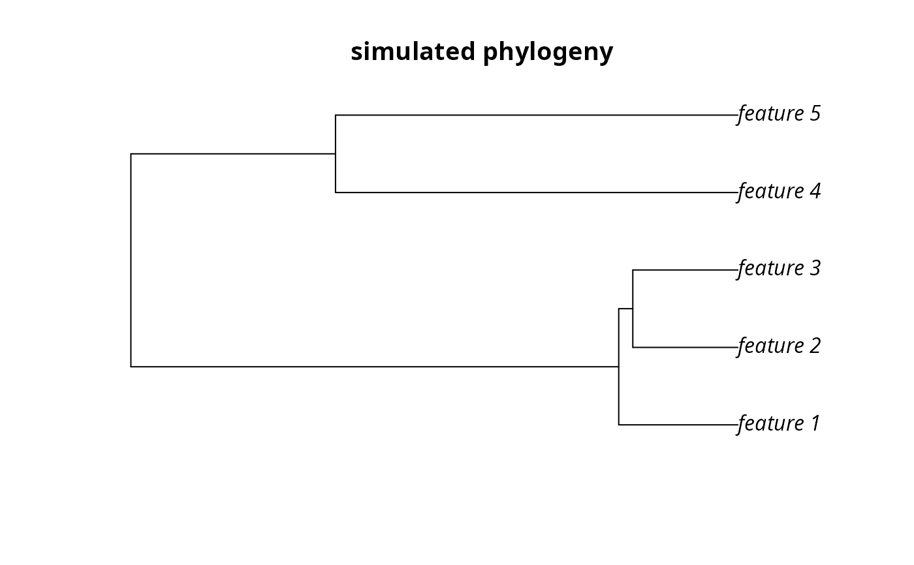

Simulated conservation planning scenario
This scenario involves making a prioritsation to adequately conserve as many simulated species as possible within a budget. To acheive this goal, the scenario involves using the following data:
data(sim_features) sim_features sim_pu_polygons sim_pu_lines sim_pu_points sim_pu_raster
Format
- sim_features
RasterStack-classobject.- sim_pu_polygons
SpatialPolygonsDataFrame-classobject.- sim_pu_lines
SpatialLinesDataFrame-classobject.- sim_pu_points
SpatialPointsDataFrame-classobject.- sim_pu_raster
RasterLayer-classobject.- sim_phylogeny
phyloobject.
Details
sim_pu_polygons- Planning units represented as polygon data. The 'cost' field in the attribute table contains the cost of each planning unit.
sim_pu_points- Planning units represented as point data. The 'cost' field in the attribute table contains the cost of each planning unit.
sim_pu_lines- Planning units represented as line data. The 'cost' field in the attribute table contains the cost of each planning unit.
sim_pu_raster- Planning units represented as raster data. Pixel values indicate cost.
sim_features- The simulated distribution of ten species. Pixel values indicate habitat suitability.
sim_phylogeny- The phylogenetic tree for the ten species.
Examples
# load data data(sim_pu_polygons, sim_pu_lines, sim_pu_points, sim_pu_raster, sim_phylogeny, sim_features)#> Warning: data set 'sim_phylogeny' not found# plot data par(mfrow=c(3,3)) plot(sim_pu_polygons) plot(sim_pu_lines) plot(sim_pu_points) plot(sim_pu_raster) plot(sim_phylogeny)#> Error in plot(sim_phylogeny): object 'sim_phylogeny' not foundplot(sim_features)# make problems using example data p1 <- problem(sim_pu_polygons, sim_features) + maximum_coverage_objective(budget=20) + relative_target(0.2)#> Error in match.arg(cost_column, names(x)): 'arg' must be NULL or a character vectorp2 <- problem(sim_pu_lines, sim_features) + maximum_coverage_objective(budget=20) + relative_target(0.2)#> Error in match.arg(cost_column, names(x)): 'arg' must be NULL or a character vectorp3 <- problem(sim_pu_points, sim_features) + maximum_coverage_objective(budget=20) + relative_target(0.2)#> Error in UseMethod("problem"): no applicable method for 'problem' applied to an object of class "c('SpatialPointsDataFrame', 'SpatialPoints', 'Spatial', 'SpatialVector', 'SpatialPointsNULL')"p4 <- problem(sim_pu_raster, sim_features) + maximum_coverage_objective(budget=20) + relative_target(0.2)#> Error in UseMethod("problem"): no applicable method for 'problem' applied to an object of class "c('RasterBrick', 'Raster', 'RasterStackBrick', 'BasicRaster')"p5 <- problem(sim_pu_raster, sim_features) + phylogenetic_coverage_objective(budget=20, tree=sim_phylogeny) + relative_target(0.2) + rsymphony_solver()#> Error in UseMethod("problem"): no applicable method for 'problem' applied to an object of class "c('RasterBrick', 'Raster', 'RasterStackBrick', 'BasicRaster')"#> Error in solve(p2): object 'p2' not found#> Error in solve(p3): object 'p3' not found#> Error in solve(p4): object 'p4' not found#> Error in solve(p5): object 'p5' not found# plot solutions